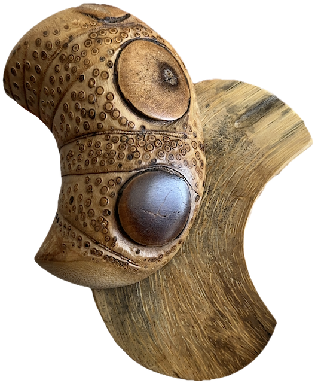
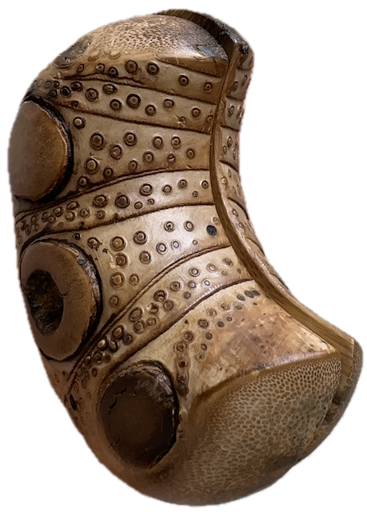
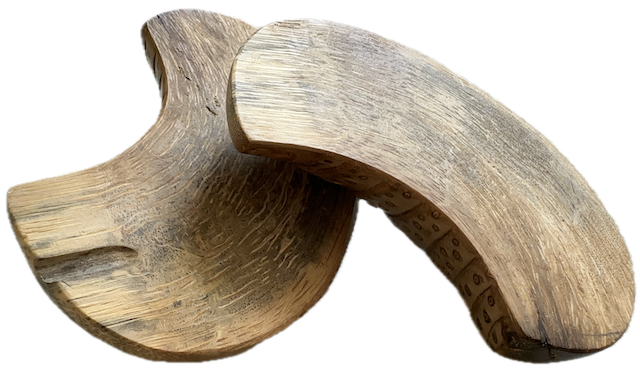

跋桮 | MOON BLOCKS
Moon blocks are used in Taiwanese temples to communicate with the gods. They are crescent-shaped pieces of bamboo or wooden with one round side and one flat side. Think of a croissant that the universe has tapped to offer you advice.
How it works
-
1
ASK
Ask a question you would like advice on. Specific questions yield better results, but you can just use the moon blocks portion for yes/no questions.
-
2
CAST
Cast the blocks 3 times. Each throw has 3 possible outcomes: yes (one flat, one round), no (two round), or laughing/unsure (two flat).
-
3
INTERPRET
-
🌸
Two or more yes, unlock the binary gods' guidance
-
🥀
Two or more no, save your question for another day
-
🌱
For anything else, try rephrasing your question
-
🌸


